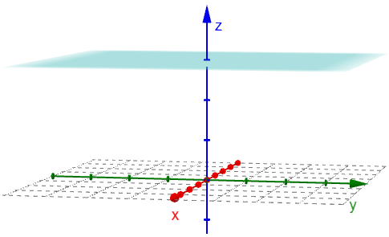
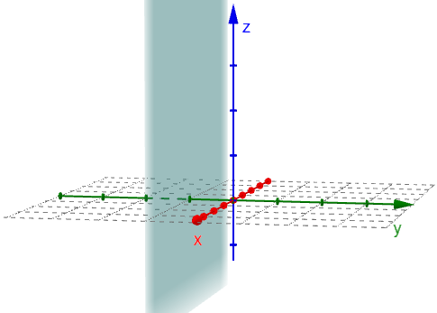
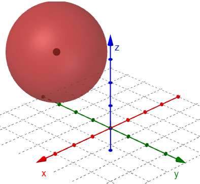

On this page, you will learn to:
- Draw simple planes in \(\mathbb{R}^3\).
- Write the equation of spheres.
Using the GeoGebra app on the previous page, we saw three specific planes called the coordinate planes.
- The xy-plane is the set of all points where the \(z\)-coordinate is 0, which can be expressed as the set \(\{(x,y,z) \, | \, z=0 \}\) or simply \(z=0\).
- The xz-plane is the set of all points where the \(y\)-coordinate is 0, which can be expressed as the set \(\{(x,y,z) \, | \, y=0 \}\) or simply \(y=0\).
- The yz-plane is the set of all points where the \(x\)-coordinate is 0, which can be expressed as the set \(\{(x,y,z) \, | \, x=0 \}\) or simply \(x=0\).
These planes can be viewed in the GeoGebra graph below. What might you observe about the planes and the axes?
Simple Planes
A simple plane is a plane that is parallel to one of the coordinate planes.
An example of a simple plane would be the plane given by the equation \(z=3\) which is a plane parallel to the \(xy\)-plane where all the \(z\)-coordinates are 3.

Similarly, the equation \(y=-1\) is a simple plane parallel to the \(xz\)-plane where all \(y\)-coordinates are \(-1\).

Spheres
Recall that a circle with center \((a,b)\) and radius \(r\) is given by the equation \((x-a)^2 + (y-b)^2 = r^2\). If we extend this 2D shape into 3D space, we get a sphere.
A sphere of radius \(r\) and center \((a,b,c)\) is defined by the following equation.
\[(x-a)^2 + (y-b)^2 + (z-c)^2 = r^2\]The equation of the sphere illustrated below is \((x-1)^2 + (y+2)^2 + (z-3)^2 = 4\). It is centered at the point \((1,-2,3)\) and has a radius of \(2\).

The following video demonstrates how we can write the equation of a sphere in standard form when given the equation in the more general form (using completing the square).
(Answer: A) -- We are given the center of the sphere, so we just need to find the radius using the given point and the distance formula.
\[r = \sqrt{\left(1-0\right)^2 + \left(4-\text{-}2\right)^2 + \left(8-6\right)^2} = \sqrt{1 + 36 + 4} = \sqrt{41}\]Plug the center and radius into the sphere equation.
\[\left(x-0\right)^2 + \left(y-\text{-}2\right)^2 + \left(z-6\right)^2 = \left(\sqrt{41}\right)^2\]Simplifying, we get the following.
\[x^2 + \left(y+2\right)^2 + \left(z-6\right)^2 = 41\]